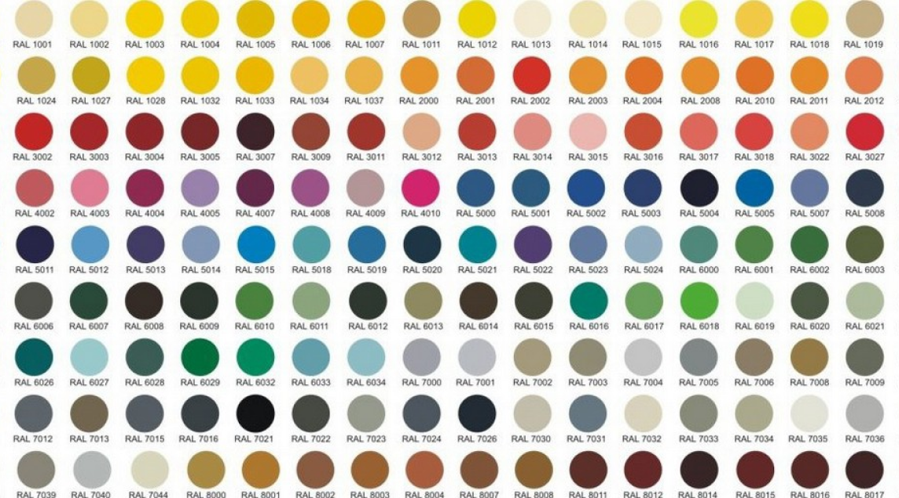
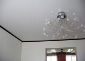
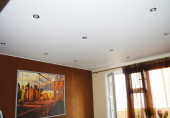
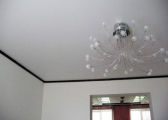
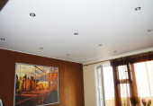

Бельгийские натяжные потолки «Polyplast» на сегодня широко представлены на российском рынке и пользуются спросом у наших покупателей. Данное покрытие ведущего производителя, изготавливается из ПВХ-пленки по современным европейским технологиям, а так же отличаются высочайшими качествами, легкодоступной стоимостью, комфортным монтажом
Однако большую популярность бельгийские натяжные потолки «Polyplast» получили не только благодаря удачному сочетанию цена-качество, но и за счет других преимуществ:

Бельгийские натяжные потолки относят к бесшовным моделям, ширина которых варьируется от 3,5 до 5,5 метров. Такие размеры позволяют изготавливать качественное покрытие без применения сварного шва в большинстве типовых российских квартир
Ассортимент изделий от «Polyplast» представлен в широчайшей цветовой гамме и всем спектре фактур, что разрешает подобрать оптимальное полотно для любого дизайнерского решения
Установка бельгийских натяжных потолков не представляет особой сложности. В этих покрытиях в основном используется гарпунная система крепления, разрешающая быстро установить полотно без особых усилий.
Глянцевые натяжные потолки совершенны для обустройства компактных комнат, не большой высоты. Ровная, а так же блестящая поверхность зрительно расширит пространство, а отражающие умение полотна делает комнату более светлой
Площадь: 18 кв.метров ЦЕНА от 300 руб/м2
Спокойный, неназойливый стиль матовых натяжных потолков будет к месту в интерьере каждого помещения. Они никак не нарушают стиль общей композиции комнаты вследствие спокойному стилю выполнения. Большая часть потребителей выбираю матовые натяжные потолки в мягких тонов
Площадь: 18 кв.метров ЦЕНА от 250 руб/м2Основное различие сатинового потолка — при разном освещении полотно изменяет собственный тон. Это формирует особую световую забаву и позволяет преобразить, а также внести изменения в дизайн. Естественный свет выявляет натуральный тон полотна, искусственный свет придаст покрытию идеально белый цвет.
Площадь: 18 кв.метров ЦЕНА от 270 руб/м2Цветовая гамма натяжных потолков "Polyplast" представлена абсолютно всеми цветами, актуальными в дизайнах различного направления. С представленного перечня тонов вы легко и просто подыщете подходящий вариант как от традиционного, так и современного интерьера.
Из числа основных плюсов бельгийских натяжных потолков — великолепное качество, а также доступная стоимость, что же рентабельно выделяет данные продукты с немецких аналогов. Для изготовления полотен применяются недорогие, но высококачественное сырье, обеспечивающее надежность, а так же прочность материала, его надежность к дефектам, а также довольно серьёзным перепадам температур.


 


